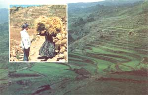
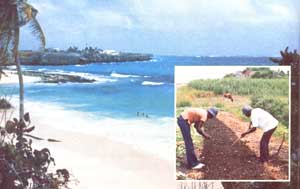

Have you ever considered joining the Peace Corps? Don't rule it out: It just may be the "hands on" introduction to self-sufficient living you've been looking for ... and the fringe benefits are certainly worth thinking about.
You may or may not be looking for a way to [1] travel abroad, [2] help people of another country help themselves, [3] learn "simple living" skills, and-at the same time, [4] earn a sizable chunk of the money you'll need to start your own homestead. If you are interested in doing these things, however, I'd like to let you in on a deal that's awfully hard to beat. I'm referring to the Peace Corps.
Wayne (my husband) and I have been Peace Corps volunteers for the past two and a half years ... 30 months that have meant a lot of changes for both of us. Thanks to our Corps experience, we've acquired literally scores of self-sufficiency skills, salted away a worthwhile amount of money, and achieved a sense of direction and self-confidence that we might never have found if we had not ventured abroad (all while doing a good turn for some folks who needed our help). The Peace Corps has-in short-paid priceless dividends for us. It could well do the same for you.
The Peace Corps' goal is threefold: [1] to transmit technical skills to people in developing countries (people who want and ask for the help), [2] to promote goodwill for the United States by having volunteers live and work alongside the citizens of other countries, and [3] to expose Americans to foreign cultures (and thereby increase mutual respect and understanding). Since its founding in 1961, the Peace Corps has sought to achieve these aims by recruiting-and sending overseas"optimistic, adventurous, concerned men and women who want to make things better for some of the poverty-ridden peoples of the world" (according to the Peace Corps Handbook, Eighth Edition, 1973).
When you join the Peace Corps, you sign up for a minimum of two years' duty. During those two years, you'll live under what most people would call primitive conditions (just how primitive depends on what country you go to), and you'll be paid a modest (by U.S. standards) monthly wage. (Our allowance came to around $200 per month per person.) More often than not, you'll be far from electricity and running water ... and chances are good that the only people you'll deal with who'll speak English will be your fellow P.C. volunteers. Admittedly, then, the Peace Corps is not for everyone. If you think that the life of a P.C.V. (Peace Corps Volunteer) may be what you're looking for, though, you could well find-as we have-that the benefits greatly outweigh any inconveniences involved.
Back in March of 1974-before we ventured abroad-my husband and I were dissatisfied, goalless members of middle-class society. Wayne had a good-paying job and our home contained all the creature comforts we needed (and then some), but we both had a strong gut feeling that we were on the road to nowhere. That's when we decided to write to ACTION (Washington, D.C. 20525), the government agency that administers the Peace Corps and VISTA (the Corps' domestic equivalent).
We filled out our applications to join the Peace Corps and-with fingers crossed- sent them in, half-expecting to be turned down. Three months later-much to our delight-we received an invitation to go to the Yemen Arab Republic ... Wayne as a community developer, me as a health educator.
Without further ado, Wayne and I sold as many of our earthly belongings as we could and used the money we got for our things to buy a high-interest savings certificate (so that our money would grow-or at least hold its own against inflation-while we were off seeing the world). What a sense of freedom and relief we felt, not having a storehouse of valuables to worry about back home. We were free at last!
The first months of our Peace Corps experience were filled with the glamour and excitement of traveling in new lands, meeting new people, and learning a new language (Arabic, in our case). By the end of our first six months in Yemen, the glamour had-to a great extent-worn off and the excitement dissipated ... but-by the same token-Wayne and I had already become much more adaptable and aware as a result of our attempts to cope with life in a new land.
Peace Corps philosophy requires that volunteers live at the same level as their host-country's nationals (so long as that level is consistent with the maintenance of good health). For the two of us-living in Yemen-that meant eating and sleeping in a small, unheated, stone-and-mud house, having four gallons of water per day total for the both of us, and no electricity. We learned quickly, though, that we could be happy-indeed, happier-without double-door refrigerators, shag carpets, cars, stereos, etc.
For example: The first time I'd ever really seen the stars-thousands upon thousands of them, blazing all across the sky-was in Yemen. (I'd never been able to see more than a small fraction of these cosmic wonders through the haze back home.) Also, in Yemen-for the first time in our lives-Wayne and I ate meat from cows that'd never been near a hormone, food additive, or artificial substance of any kind ... and was that meat ever good! (The same was true for the other food we ate.)
I might mention, too, that-at least for Wayne and me-the process of tackling each new challenge together brought us closer than we'd ever been in our three years of marriage.
A year after we arrived in Yemen, Wayne's job hit a dead end. Coincidentally, around this same time we met some MOTHER-type folks who turned us on to the existence of the back-to-the-land movement in the U.S. Thanks to this-and to all that we had observed, learned, and lived over the previous year-we decided then that our future lay in having our own self-sufficient homestead.
At any rate, by December of 1975 we were on our way to a second assignment, this time in Barbados in the West Indies. Wayne's new job was that of 4-H organizer: He would promote new 4-H clubs and assist existing 4-H groups in one of the six island districts. I was to work in the public schools to develop arts and crafts programs.
In many respects, our stints in Yemen and Barbados were a study in opposites. The geographical difference alone was enough to boggle our minds: We went from a desert mountain-top in Yemen (with an elevation of 10,000 feet) to a pancake-flat tropical island in the Caribbean. From a technological standpoint, Yemen was barely coming out of the 13th century, while Barbados seemed to us as modern as any small town in the States. All things considered, though, our stay in Barbados proved every bit as enjoyable (and enriching) to us-in its own way-as the stint in Yemen.
One nice thing about our assignment in the Caribbean was that it gave us time to do our homesteading homework. For example, while in Barbados we finally had the time (and the money) to order all of MOTHER's back issues and read them cover to cover, in order. Also, we wrote to those areas in the States that interested us to inquire about jobs, land prices, and taxes. In addition, we did a good deal of gardening experimentation in Barbados: We tried Ruth Stout's "no work" technique, companion planting, double cropping, and succession planting.
Although the Peace Corps is geared mainly to giving out knowledge to the locals, a great deal of know-how can be gained back from host-country nationals if you're willing to learn. Wayne has dabbled in stone and mud construction and beekeeping, for instance ... and I've learned to winnow grain, weave baskets, and skin dive, among other things. I should emphasize that what we gained in each of these areas depended directly on how much we put into them. (Learning that little truth is a valuable lesson in itself.)
To put it another way, our Peace Corps experience enabled Wayne and me to give our homesteading plans and aspirations the test of time. As a result, we're more convinced than ever that our goals of becoming self-sufficient are worthwhile ... and attainable.
So much for the intangible benefits of Peace Corps life. Let's review some of the material advantages of being a P.C. volunteer.
First, the money. It may surprise you to learn e to save an a our monthly allowance came to just $200 each-Wayne and I were able to save an average of $350 per month while we were "on the job". Both in Yemen and in Barbados, we found that we had little trouble living on less than our combined living allowances (although some people seemed to run short every month no matter how much allowance they got). Of course, we don't smoke or drink a lot, and we never splurged on imported goodies. But we feel that we lived pretty well, nonetheless.
Then too, in addition to a monthly living allowance of about $200 (plus or minus a few dollars, depending on where in the world you go), the Peace Corps puts aside $125 per month per person in "readjustment allowance". This money-which is kept in trust until you depart the Corps-is intended to provide a financial cushion for you to fall back on between the time you leave the Corps and the time you find a new job. (Thanks to this readjustment allowance, our monthly stipends, and the money we got from the sale of our household goods, we estimate that after two and a half years in the Peace Corps we've saved the lion's share of the cash we'll need-about $10,000-to buy our "dream farm".)
Another tangible benefit that Peace Corps volunteers enjoy is 100% medical insurance coverage. This includes complete physical exams upon entering and leaving the Corps (and in between), free medicine, replacement eyeglasses (should yours get lost), etc. In certain cases, the Peace Corps even covers maternity costs for a married volunteer who has a baby while in the Corps. (Also, if you should need to be evacuated quickly for emergency treatment, the U.S. Air Force will have a jet fly you to the nearest medical facility.)
Vacation time is apportioned at two days per month of service, or 24 days per year. (Some $18 U.S. in vacation money is included in each month's allowance.) P.C. encourages its volunteers to travel in the host country, but there's no hard-and-fast rule here. Wherever you go, you can always stay with other volunteers to cut expenses (as long, of course, as you're in a country that has a Peace Corps program).
If you're ever in need of travel advice, just ask a P.C.V. He/she is usually a storehouse of valuable information about his/her country.
Before you send your letter off to Washington, D.C., you should know that not everyone can qualify for Peace Corps duty. First of all, only U.S. citizens over the age of 18 are eligible ... and then only if they have usable skills. (Your chances of getting in are much better if you're trained in engineering, nursing, or medical technology than if you hold a bachelor's degree in history or social science. Your chances are better still if you're fluent in a second language.)
Also, it helps to be single. While married couples are not discriminated against per se, the Peace Corps does require that both members of a married pair have usable skills that are needed in the same place in the destination country. Both spouses, in other words, must accept job assignments ... and those job assignments have to be in the same part of the same country.
Every volunteer I've talked to has had a different experience entering the Peace Corps. For some, getting in was easy ... for others, it was hard. Some heard from Washington in two weeks, others two years. All I can say is [1] Be persistent. After you submit your application to ACTION, check on its progress. ACTION has a toll-free number: 1-800424-8580. Why not use it? [2] Don't get discouraged. Someone out there needs your talents and abilities. The Peace Corps is now operating in more than 60 countries, and new programs are opening up all the time. Old programs, too, are constantly being revised and expanded. So if there was no job for you two months ago, call or write again ... something may have come up. Be polite, but be persistent. As my mother wisely counseled, "The squeaky wheel gets the grease."
The Peace Corps-as I said earlier-isn't for everyone. If, however, you'd like to [a] help others to help themselves, [b] make friends for America, [c] learn a great deal about you!, and [d] put away a little money, too ... the Peace Corps may be for you!
|
 Scenes of Yemen... |
 Scenes of Barbados |
|